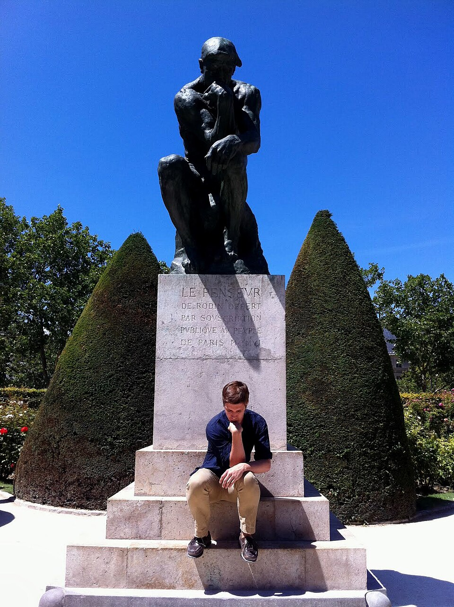
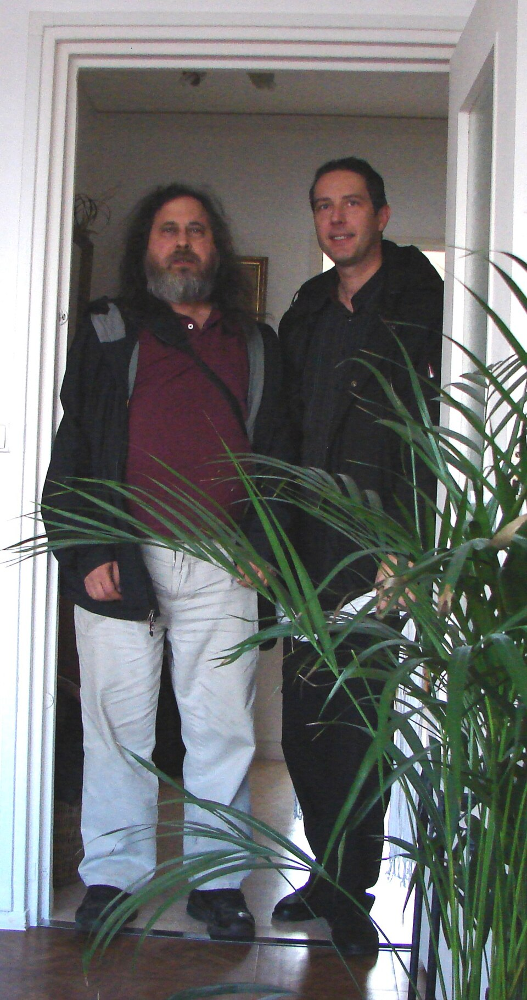
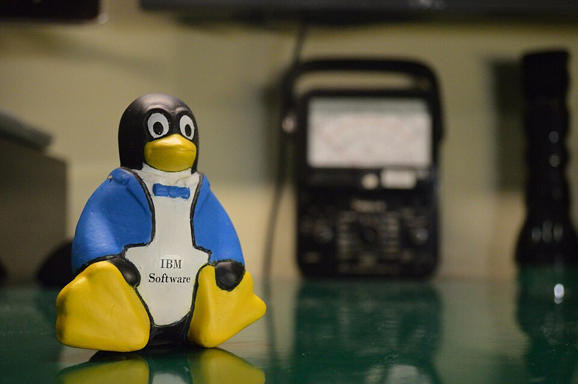
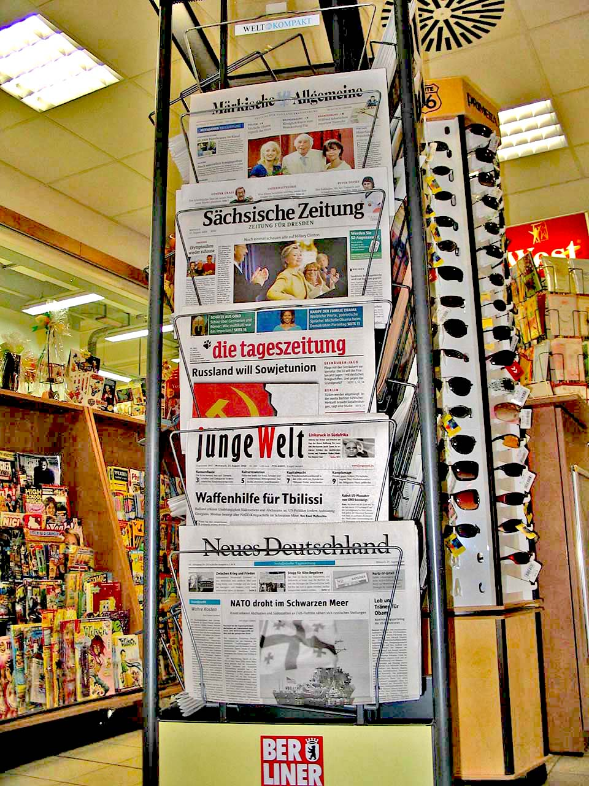

Intellectual Property,
Creative Commons &
Free Software
Navigating statutory legal protection, flexible licensing frameworks, and code freedom in mass communication.
Ideas
Creators
Society
Journalism & Mass Communication
The Digital Content Revolution
Digital technology enables instant copying and distribution — creating essential legal and ethical duties for media creators.
Intellectual Property
Grants creators rights over original creations of the mind — from articles to inventions.
Creative Commons
Pre-authorized public sharing under clear, standardized conditions — some rights reserved.
Free Software
Guarantees four essential freedoms to run, study, modify, and share software.
Media & Content Evolution
From statutory print protection to open-source digital networks — expanding media reach and legal scope.
Copyright Act
Establishes statutory protection for written journalism, books, and artistic media.

GNU Free Software
Stallman launches the GNU Project to guarantee user code freedoms.

Linux Kernel
Torvalds releases the Linux kernel, powering complete GNU/Linux OS systems.

Creative Commons
Lessig introduces CC licences for flexible digital content sharing.
What is
Intellectual Property?
Legal rights that protect creations of the mind, enabling innovation, recognition and economic value.
Examples span journalism and media work: articles, books, photographs, films, music, logos, inventions, designs and computer software.
(IDEAS)
(RIGHTS)
(SOCIETY)
Innovation
Creators
Growth
& Education
The Five Pillars
of IP Protection
Distinct statutory frameworks tailored for creative, commercial, and technical innovations.
Copyright
Original creative, literary, artistic & software works.
Patent
Novel technological & scientific inventions.
Trademark
Brand names, logos, symbols & identifiers.
Industrial Design
Visual appearance or aesthetic shape of a product.
Geographical Indication
Regional products tied to a specific geographic origin.
Copyright:
protecting original works
Copyright protects original creative works — automatically giving creators rights over their use and distribution.
Patents, Trademarks
& Designs
Safeguarding technological inventions, brand identity, and industrial aesthetics — plus regional origin.

Patent
Grants exclusive commercial monopoly over technical inventions satisfying statutory criteria.
Trademark
Distinguishes brand identity, mastheads, logos and slogans in the media marketplace.
Industrial Design
Protects visual ornamental shape and product aesthetics under statutory registration.
Geographical Indication
Identifies products associated with a particular geographical region and its reputation.
Every story is
intellectual property
Journalists both create and use creative content — so understanding copyright, permissions, licences and attribution is a professional duty.
Secure rights before using others' work.
Check the exact terms that apply.
Credit creators clearly and accurately.

The Indian IP
statute book
India protects intellectual property through dedicated statutes, each covering a distinct category of creation.
The main law dealing with copyright in India.
Deals with patents and inventions.
Deals with trademarks.
Protection for geographical indications.
Protection for registered industrial designs.
Sharing with
some rights reserved
Creative Commons (CC) is a system that lets creators share work under specific conditions — it does not remove copyright.
The creator chooses a licence that tells others what they can and cannot do with the work.
A permission layer
for open culture
CC makes it easier to legally share and reuse creative works — encouraging openness while creators keep certain rights.
Classroom materials, papers and datasets.
Photos and graphics for reporting.
Images, audio, video and websites.
Remix, adaptation and collaboration.
Four building blocks of
every CC licence
Attribution
The user must give credit to the creator.
ShareAlike
Modified work is generally shared under the same or compatible licence.
NonCommercial
The work cannot be used commercially under the licence.
NoDerivatives
The work can be shared, but modified versions cannot be distributed.
Licences combine these elements — e.g. CC BY-NC means attribution + non-commercial use only.
Six licences — from open
to reserved
Allows reuse and modification with attribution.
Reuse and modification with attribution and ShareAlike conditions.
Reuse for non-commercial purposes with attribution.
Sharing with attribution, but no distribution of modified versions.
Non-commercial adaptation with attribution and ShareAlike.
Non-commercial sharing with attribution; no modified versions.
A tool for waiving copyright and related rights to the extent legally possible — placing work as close to the public domain as law allows.
"CC" is not
"free to use"
Before using CC material, journalists should run a quick licence check.
A Creative Commons work should never automatically be treated as free to use without conditions.
Freedom to use, study,
modify & share
Free software gives users essential freedoms. "Free" means freedom, not necessarily free of cost — and access to source code is necessary for studying and modifying it.
From GNU to a global
operating system
The modern free software movement developed mainly during the 1980s and matured through the 1990s.
GNU Project
Richard Stallman announces GNU — a Unix-like operating system made entirely of free software.
Free Software Foundation
Stallman founds the FSF, which works to promote software freedom.
GNU GPL
The GNU General Public License becomes a landmark free-software licence.
Linux Kernel
Linus Torvalds releases Linux; with GNU software it forms systems commonly called GNU/Linux.
Same code,
different emphasis
Free Software
Focuses on user freedom and rights — ethical stance centred on what users may do with software.
Open Source
Focuses on collaborative development and the practical advantages of source-code availability.
Different traditions, one shared ecosystem: freedom for users, practicality for developers.
Tools you already use — freely
A full newsroom,
zero licence fees
FOSS supports every stage of media production — useful for students, independent creators and media organisations.
| Work Stage | Recommended FOSS Tool |
|---|---|
| Writing | LibreOffice Writer |
| Image editing | GIMP |
| Audio editing | Audacity |
| Video editing | Kdenlive |
| Graphic design | Inkscape |
| 3D creation | Blender |
| Web publishing | WordPress |
Read the licence
before you redistribute
Each licence carries its own conditions — users should check the terms before modifying or redistributing software.
Strong copyleft; landmark free-software licence.
Lesser GPL for software libraries.
Affero GPL covering network deployment.
Short, permissive and widely adopted.
Permissive family of academic licences.
Permissive with explicit patent protection.
Copyleft or permissive — every licence defines what you must keep, share or state when redistributing code.
Using copyright to
keep code free
Copyleft is a licensing method in some free-software licences. It uses copyright law itself to help preserve certain freedoms when software is redistributed.
Software is redistributed under the relevant free conditions.
Users continue to receive the freedoms provided by the licence.
The GNU GPL is the landmark copyleft licence.
Three ideas, one ecosystem
| Feature | Intellectual Property | Creative Commons | Free Software |
|---|---|---|---|
| Core idea | Protects creations and inventions | Helps creators share works under conditions | Gives users freedoms to use, study, modify and share software |
| Scope | Includes copyright, patents and trademarks | Works within the copyright system | Mainly concerns software code |
| Focus | Legal creator rights | Controlled sharing and reuse | Software freedom |
| Example | Copyright in a news photo | A CC BY photograph | GPL-licensed software |
Digital literacy for
responsible media
Journalism students use many digital tools and materials — understanding these concepts is part of becoming a responsible professional.
Responsibly."
Protect. Share.
Free.
These concepts matter in today's digital world — especially for journalism and mass communication.
Intellectual Property provides legal protection for creative works, inventions, brands and designs.
Creative Commons allows creators to share their work under specific conditions.
Free Software gives users important freedoms to use, study, modify and share software.
Key Takeaways
IP protects creativity and drives innovation across society.
Different IP types serve different purposes — copyright, patent, trademark, design, GI.
Creative Commons & FOSS enable new forms of open collaboration.
Responsible use is essential for a fairer, more open future.
TOMORROW
Sources &
further reading
- 01WIPO. What is Intellectual Property?
- 02Govt of India. The Copyright Act, 1957.
- 03Govt of India. The Patents Act, 1970.
- 04Govt of India. The Trade Marks Act, 1999.
- 05Creative Commons. About CC Licences.
- 06Free Software Foundation. What is Free Software?
- 07GNU Project. GNU General Public License.
- 08Stallman, R. Free Software, Free Society.
- 09Lessig, L. Free Culture.
Photographs — Wikimedia Commons · CC BY / CC BY-SA / Public Domain